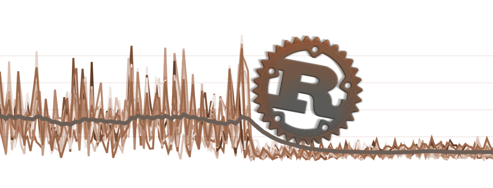

Introduction
ARwMq9b6's blog.
Lovers' prattle to Rust.

图片来源：
Lost in Golang.

图片来源：
导出 golang 中的私有 (unexported) 项的方法
本文将以 go 标准库中的 sync/pool 为例探讨导出 unexported 项的方法
导出私有全局变量
通过 go:linkname 来导出私有全局变量
package main
import _ "unsafe"
//go:linkname poolRaceHash sync.poolRaceHash
var poolRaceHash [128]uint64
func main() {
// main.poolRaceHash is an alias of sync.poolRaceHash
// -> unexported item sync.poolRaceHash is stolen
var _ = poolRaceHash
}
导出私有 struct field
可通过裸指针直接操作内存来导出私有 field
package main
import (
"sync"
"unsafe"
)
type Pool struct {
noCopy noCopy
local unsafe.Pointer
localSize uintptr
New func() interface{}
}
type noCopy struct{}
func main() {
// literally construct a `sync.Pool`
var externPool = sync.Pool{
New: func() interface{} {
return nil
},
}
var pool = (*Pool)(unsafe.Pointer(&externPool))
// unexported item `sync.Pool.local` is stolen
_ = pool.local
}
导出私有 function 或 method
方法 1: 通过 go:linkname
第一步
package main
import (
"sync"
"unsafe"
)
type Pool struct {
noCopy noCopy
local unsafe.Pointer
localSize uintptr
New func() interface{}
}
type noCopy struct{}
type poolLocal struct {
private interface{}
shared []interface{}
sync.Mutex
pad [128]byte
}
//go:linkname pinSlow sync.(*Pool).pinSlow
func pinSlow(p *sync.Pool) *poolLocal
//go:linkname (*Pool).pinSlow sync.(*Pool).pinSlow
func (p *Pool) pinSlow() *poolLocal
//go:linkname poolRaceAddr sync.poolRaceAddr
func poolRaceAddr(x interface{}) unsafe.Pointer
func main() {
// literally construct a `sync.Pool`
var externPool = sync.Pool{
New: func() interface{} {
return nil
},
}
var pool = (*Pool)(unsafe.Pointer(&externPool))
// main.pinSlow is an alias of sync.(*Pool).pinSlow
// -> unexported item sync.(*Pool).pinSlow is stolen
var _ = pinSlow(&externPool)
// main.(*Pool).pinSlow is an alias of sync.(*Pool).pinSlow
// -> unexported item sync.(*Pool).pinSlow is stolen
var _ = (*Pool).pinSlow(pool)
// main.poolRaceAddr is an alias of sync.poolRaceAddr
// -> unexported item sync.poolRaceAddr is stolen
var _ = poolRaceAddr(nil)
}
第二步
在项目中的新建一个空白的、任意名称的汇编代码文件（比如 asm.s）以帮助编译器完成函数完整性检查
go_export
├── asm.s
└── main.go
第三步
$ go build
方法 2: 直接获取运行时中的函数指针
go-forceexport 提供了这种便利
注意事项
- 当使用 go:linkname 导出非标准库中的私有项时，须在当前包中显式地 import 来源包